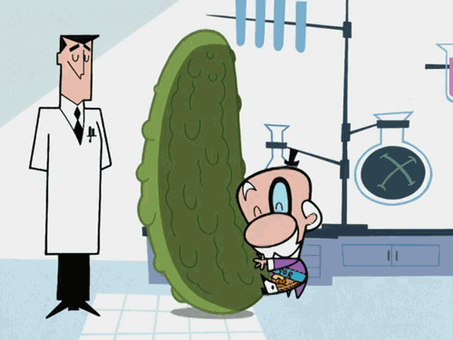
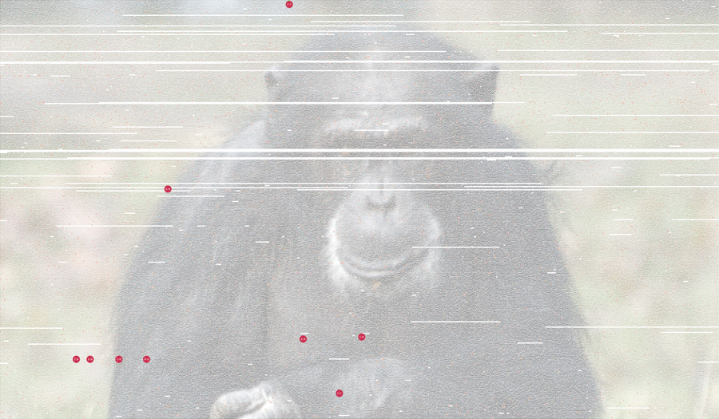

Processing.js
no es una librería de canvas más
...o para ser más exactos
Processing
El Creador
Plan de Guerra
Se asume que la audiencia tiene un conocimiento intermedio de JavaScript.
- Qué es processing
- Un pequeño ejemplo
- Preguntas
- Visualización de datos
- Una aplicación
- Links
- FIN
¿Qué es?
- Processing es un lenguage y ambiente de desarrollo open source para gente que quiere crear imágenes, animaciónes e interacciones.
- Desarrollado inicialmente como software para crear prototipos y enseñar los fundamentos de la programación dentro de un contexto visual.
- A la fecha Processing a evolucionado a un lenguaje que es utilizado por estudiantes, artistas y profesionales.
Características
- Desarrollado para Linux/Unix, Widnows o Mac/OSX
- Capacidad de generar salida en 2D, 3D y para impresión
- Soporte integrado para OpenGL (WebGL)
- Originalmente escrito para JAVA, portado a Ruby, Python, .NET, JS
- ...y coffeeescript
Estructura
<!doctype html>
<html>
<head>
<title>Hello Processing</title>
<script src="javascripts/processing.js"></script>
</head>
<body>
<canvas data-processing-sources="sample.pde"></canvas>
</body>
</html>
El código
float radius = 50.0;
int X, Y;
int nX, nY;
int delay = 16;
void setup(){
size(640,480);
strokeWeight(10);
frameRate(15);
X = width / 2;
Y = height / 2;
nX = X;
nY = Y;
}
void draw() {
radius = radius + sin(frameCount / 4);
X += (nX - X )/delay;
Y += (nY - Y )/delay;
background(100);
fill(0, 121, 184);
stroke(255);
ellipse(X, Y, radius, radius);
}
void mouseMoved(){
nX = mouseX;
nY = mouseY;
}
Taraaaaaan!
Preguntas...
II. Visualización de datos
La visualización de datos es el estudio de la representación visual de datos
donde los datos son información abstraida de alguna manera esquemática, incluyendo atributos, variables, o alguna forma de unidad informática
Por ejemplo
 © 2008 Ben Fry.Hagamos algo
De un set de datos representemos información relevante
Por ejemplo, de un feed the twitter obtengamos el hash #tijuana
Representemos las menciones negativas y las positivas
El uso de palabras dentro de un diccionario determina si el post es positivo o negativo
La posición refuerza su califcación.
Boceto
rayar aqui...
jQuery al rescate!
( function($, window) {
$.extend({
twitfeed: function(){
if ( ! arguments || typeof arguments[0] != 'string' ){
throw "TwitFeed error: query string required as first argument";
}
var search_service = 'http://search.twitter.com/search.json?q=' + arguments[0]
var _results = [];
var _cb = null;
$.each( arguments, function(k, v) {
if (typeof v == "function") {
_cb = v;
}
});
$.getJSON( search_service, function(data) {
$.each( data.results, function(k, v) {
item = {
created_at: v.created_at,
language: v.iso_language_code,
text: v.text
}
_results.push( item );
});
if (_cb) {
_cb.apply( this, [_results] );
}
});
return this;
}
});
})( jQuery );Estructura Básica
void setup(){
size(500,399);
frameRate(30);
}
Definimos nuestro criterio
String good = "sexo tequila artistas abrazo bueno adelante sano bien trabajo feliz comida musica fiesta sabor cocina arte cultura exito";
String bad = "narcotúnel mal malo pobre narco violencia infeliz baches fraude robo trafico basura ruido policia";
void setup(){
size(500,399);
frameRate(30);
}
El infierno Asincrónico
...
Array twits = new Array();
...
void setup(){
size(500,399);
frameRate(30);
$.twitfeed( "tijuana", handleTwits );
}
void handleTwits( results ) {
for ( index in results ) {
_twit = results[index];
_good_score = wordScore( _twit.text, good );
_bad_score = wordScore( _twit.text, bad );
_base_score = 144 - _twit.text.length
_twit.score = 1/( _base_score + (_good_score - _bad_score)) * 1000;
twits.push( _twit );
}
}
Más configuración
Object o = new Object();
...
void setup(){
size(500,399);
frameRate(30);
defaults();
$.twitfeed( "tijuana", handleTwits );
}
...
void defaults(){
smooth();
o.x = width/2;
o.y = height/2;
}
Recursos externos
o, de cómo CORS me venció
/* @pjs
preload = "/path/to/image.png";
*/
PImage bg = new PImage;
...
void setup(){
...
bg = loadIMage(/path/to/image.png);
$.twitfeed( "tijuana", handleTwits );
}
Quién Quiere imagenes locales
...
void setup(){
...
bg = loadIMage(http://www.host.com/path/to/image.png);
$.twitfeed( "tijuana", handleTwits );
}

La Idea
Desde el servidor local crear un proxy que obtenga la imagen remota y la sirva de nuevo desde una direccion local
#no requiere preload...
void setup(){
...
bg = requestIMage(/img/tjmood/?f=/remote/path/&h=8);
$.twitfeed( "tijuana", handleTwits );
}
No intente esto en casa!
var connect = require('connect');
var http = require('http');
var fs = require("fs");
var url = require("url");
var admin = function(req, res){
params = url.parse(req.url, true).query;
farm_host = 'farm' + params.h + '.staticflickr.com'
options = {
host: farm_host,
port: 80,
path: params.f
};
var request = http.get(options, function (result) {
var img = "";
result.setEncoding('binary');
result.on('data', function (chunk) {
if (result.statusCode == 200) {
img += chunk;
}
});
result.on('end', function () {
res.setHeader('Transfer-Encoding', 'chunked');
res.setHeader('Content-Type', 'image/jpeg');
res.end(img, 'binary');
});
});
request.on( 'error', function(e){
console.log(e);
});
};
var app = connect()
.use(connect.logger('dev'))
.use(connect.bodyParser())
.use( connect.static(__dirname))
.use('/img/tjmood', admin)
.use( function(req, res){
res.end('try /img/tjmood');
});
http.createServer(app).listen(8080);
Así quedó
...
void setup(){
...
requestMainBg();
$.twitfeed( "tijuana", handleTwits );
}
void draw(){
setMainBg();
}
Los métodos
void requestMainBg () {
$.tjnow( function(r){
bg = requestImage( "http://localhost:8080/img/tjmood?f=" + r.i + "&h=" + r.h );
});
}
void setMainBg() {
if ( bg.width !== 0 ) {
bg.resize(width, height);
background(bg);
filter(BLUR, 6);
stroke(255, 155);
line(0, o.y, width, o.y);
line(o.x, 0, o.x, height);
}
}
De nuevo jQuery
( function($, window) {
$.extend({
tjnow: function(_cb) {
var url = "http://api.flickr.com/services/feeds/photos_public.gne?jsoncallback=?";
var data = {tags: "tijuana", format: "json"};
$.getJSON( url, data, function(data) {
index = Math.floor(( Math.random()* data.items.length ));
flkrPattern = /http:\/\/farm(\d)\.staticflickr\.com/;
source = data.items[index].media.m.replace(/_m/,'')
img = source.replace(flkrPattern,'');
host_number = source.match(flkrPattern);
data = {i: img, h: host_number[1] };
_cb.apply(this, [data]);
});
return this;
}
});
})( jQuery );
Al fin, twits!
Array twits = new Array();
...
void setup(){
...
$.twitfeed( "tijuana", handleTwits );
}
void handleTwits( results ) {
for ( index in results ) {
_twit = results[index];
...
twits.push( _twit );
}
}
void draw(){
setMainBg();
for (p in twits){
renderTwit( twits[p] );
}
}
Yo tengo una bolita...
void renderTwit(t) {
mood = t.score >= 0 ? #CC0000 : #00CC00;
size = t.text.length * 0.15;
posx = o.x - t.score;
posy = o.y - ( t.score * Math.sin(t.score) );
fill( color(mood, 125) );
noStroke();
ellipse( tremor(posx), tremor(posy), size, size );
}
float tremor(n) {
return n + ( Math.sin(Math.random()) + Math.cos(Math.random()) );
}